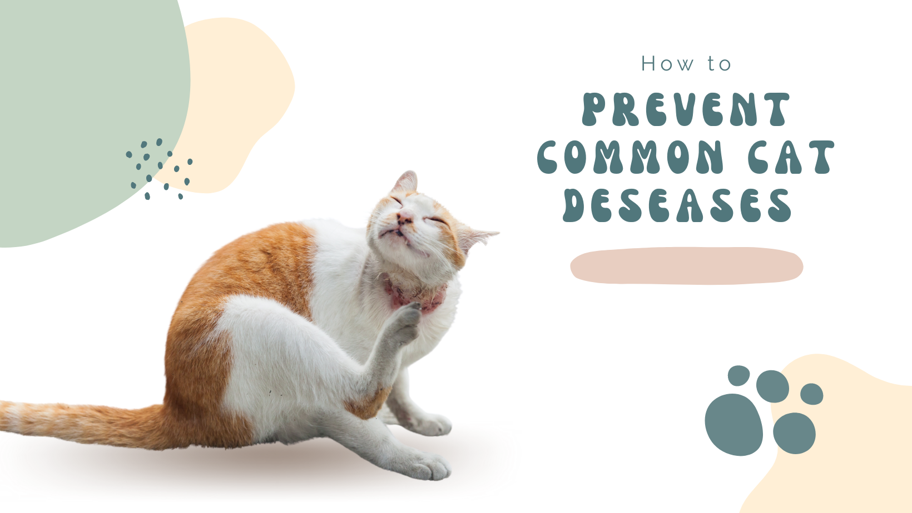

Here are some tips on How to Prevent Common Cat Diseases:
Cats are susceptible to a variety of diseases, some of which can be serious. By taking steps to prevent these diseases, you can help keep your cat healthy and happy.
- Vaccinate your cat: Vaccinations are the best way to protect your cat from a variety of diseases, including rabies, feline distemper, and feline leukemia.
- Keep your cat indoors: Keeping your cat indoors will help protect them from exposure to diseases that are spread through contact with other animals, such as fleas, ticks, and mosquitoes.
- Spay or neuter your cat: Spaying or neutering your cat can help reduce their risk of developing certain diseases, such as pyometra (a life-threatening uterine infection) and testicular cancer.
- Provide a healthy diet: Feeding your cat a healthy diet can help boost their immune system and make them less susceptible to disease.
- Keep your cat's litter box clean: A dirty litter box can be a breeding ground for bacteria and parasites, which can make your cat sick.
- Take your cat to the vet for regular checkups: Your veterinarian can screen your cat for diseases and provide early treatment if they do become sick.
Here are some additional tips to help prevent common cat diseases:
- Keep your cat's environment clean: This includes cleaning up any cat waste immediately, washing your cat's food and water bowls regularly, and vacuuming and dusting your home regularly.
- Avoid contact with wild animals: Wild animals can carry diseases that can be transmitted to cats, such as rabies and feline leukemia.
- If you have other pets, keep them up-to-date on their vaccinations as well.
- If you think your cat may be sick, take them to the vet immediately. Early diagnosis and treatment is essential for a good outcome.
By following these tips, you can help keep your cat healthy and happy.
Back to Blog